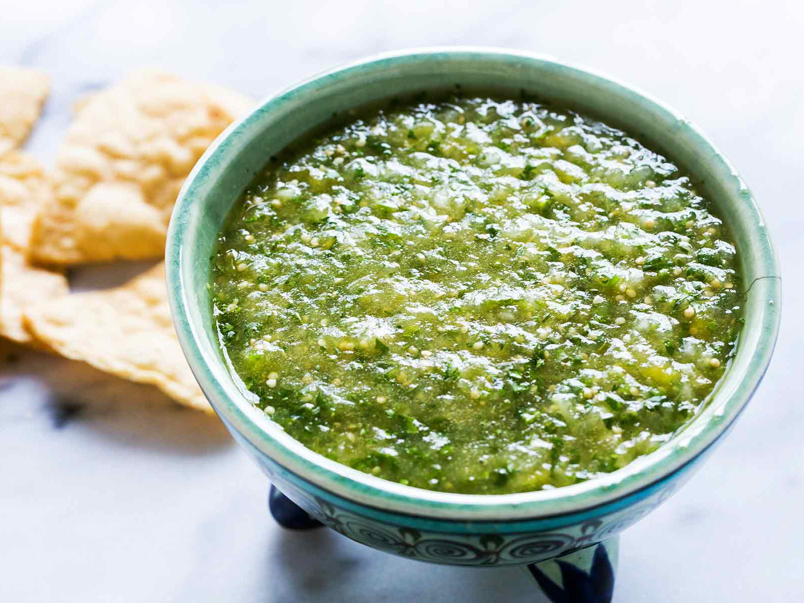

Salsa Verde

Description
A basic salsa verde made with simmered tomatillos and cilantro.
If you only know how to make one sauce, make it this one.
Ingredients
- 1 1/2 pounds tomatillos, husks and stems removed
- 1 to 2 jalapeno or serrano peppers, stem and seeds removed
- 1 small white onion, skin removed, cut in half
- 1 bunch cilantro leaves and tender stems
- Kosher salt
Steps
- Combine tomatillos, serranos, and onion in a medium saucepan and cover with water. Bring to a boil over high heat then reduce to a simmer. Simmer until vegetables are completely softened, about 10 minutes, stirring occasionally to make sure all sides are softened.
- Drain vegetables then transfer to a blender. Add cilantro and a large pinch of salt. Blend on medium speed until a chunky puree is formed, about 30 seconds. Transfer to a bowl, season to taste with more salt or lime juice if necessary, and serve. Cooled salsa can be stored in a sealed container in the refrigerator for up to 2 weeks.